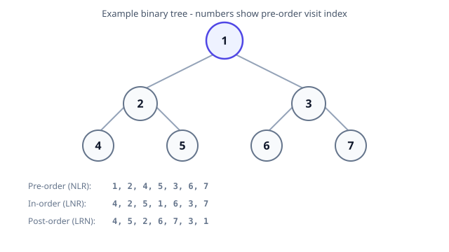

Tree
A tree is a hierarchical structure of nodes connected by edges, with no cycles. A binary tree limits each node to at most two children (left and right). Trees model file systems, DOM, decision flows, and recursive problem structure.
When to use trees
| Scenario |
Structure |
| Hierarchical data |
General tree |
| Sorted dynamic data |
Binary search tree (balanced) |
| Priority scheduling |
Heap (complete binary tree) |
| String prefixes |
Trie |
| Expression parsing |
Parse tree |
Terminology
| Term |
Meaning |
| Root |
Top node; no parent |
| Leaf |
Node with no children |
| Height |
Longest root-to-leaf path (edges or nodes — state convention) |
| Depth |
Distance from root to a node |
| Subtree |
Node plus all descendants |
| Binary tree |
≤ 2 children per node |
| Full / complete / balanced |
Structural constraints affecting height and array storage |
Height h tree: max depth h. Balanced binary tree height ≈ O(log n) for n nodes; skewed chain height O(n).
Complexity (binary tree, n nodes, height h)
| Operation |
Average (balanced) |
Worst (skewed) |
| Traversal (visit all) |
O(n) |
O(n) |
| Search (generic BT) |
O(n) |
O(n) |
| Insert at known parent |
O(1) |
O(1) |
| Height / size computation |
O(n) |
O(n) |
Recursive traversals use O(h) call stack space — O(log n) balanced, O(n) skewed.
Traversal orders
| Order |
Sequence |
Common use |
| In-order (LNR) |
Left, node, right |
BST → sorted order |
| Pre-order (NLR) |
Node, left, right |
Copy tree, prefix notation |
| Post-order (LRN) |
Left, right, node |
Delete tree, postfix notation |
| Level-order (BFS) |
Level by level |
Shortest path on unweighted tree |
In-order on a BST yields sorted order — say this when explaining why BST search is O(log n) on a balanced tree.

Level-order (BFS) template
from collections import deque
def level_order(root):
if not root:
return []
q = deque([root])
result = []
while q:
level_size = len(q)
for _ in range(level_size):
node = q.popleft()
result.append(node.val)
if node.left: q.append(node.left)
if node.right: q.append(node.right)
return result
Common FAANG patterns
| Problem type |
Approach |
| Diameter / max path sum |
Post-order DFS; combine left + right at each node |
| LCA |
Binary lifting, or BST special case |
| Serialize / deserialize |
Pre-order with null markers (LC 297) |
| Validate BST |
Pass (lo, hi) bounds down the tree (LC 98) |
Convention: this section uses edge-count height (empty tree height = -1) unless stated otherwise — match the interviewer's definition early.
Implementation
| class Node:
def __init__(self, value):
self.value = value # Node's value
self.left = None # Left child
self.right = None # Right child
class BinaryTree:
def __init__(self, root_value):
self.root = Node(root_value) # Root node of the binary tree
def insert_left(self, parent, value):
if parent.left is None:
parent.left = Node(value)
else:
new_node = Node(value)
new_node.left = parent.left
parent.left = new_node
def insert_right(self, parent, value):
if parent.right is None:
parent.right = Node(value)
else:
new_node = Node(value)
new_node.right = parent.right
parent.right = new_node
# In-order Traversal: Left -> Root -> Right
def inorder_traversal(self, node):
if node:
self.inorder_traversal(node.left)
print(node.value, end=" ")
self.inorder_traversal(node.right)
# Pre-order Traversal: Root -> Left -> Right
def preorder_traversal(self, node):
if node:
print(node.value, end=" ")
self.preorder_traversal(node.left)
self.preorder_traversal(node.right)
# Post-order Traversal: Left -> Right -> Root
def postorder_traversal(self, node):
if node:
self.postorder_traversal(node.left)
self.postorder_traversal(node.right)
print(node.value, end=" ")
# Function to get the size of the tree (number of nodes)
def size(self, node):
if node is None:
return 0
else:
return 1 + self.size(node.left) + self.size(node.right)
# Function to get the maximum value in the tree
def max_value(self, node):
if node is None:
return float('-inf') # Negative infinity as base case
else:
left_max = self.max_value(node.left)
right_max = self.max_value(node.right)
return max(node.value, left_max, right_max)
# Function to check if a given key is present in the tree
def contains(self, node, key):
if node is None:
return False
if node.value == key:
return True
return self.contains(node.left, key) or self.contains(node.right, key)
# Function to calculate the height of the tree
def height(self, node):
if node is None:
return -1 # For an empty tree, return -1 (or 0, based on convention)
else:
# Get the height of the left and right subtrees and return the larger one + 1
left_height = self.height(node.left)
right_height = self.height(node.right)
return 1 + max(left_height, right_height)
def iterative_inorder_traversal(self, root):
stack = []
current = root
while stack or current:
# Reach the leftmost node
while current:
stack.append(current)
current = current.left
# Pop from stack and visit the node
current = stack.pop()
print(current.value, end=" ")
# Move to the right subtree
current = current.right
def iterative_preorder_traversal(self, root):
if root is None:
return
stack = [root]
while stack:
node = stack.pop()
print(node.value, end=" ")
# Push right child first so that left child is processed first
if node.right:
stack.append(node.right)
if node.left:
stack.append(node.left)
# Iterative Post-order Traversal (using a stack)
def iterative_postorder_traversal(self, root):
if root is None:
return
stack = []
last_visited_node = None
current = root
while stack or current:
if current:
stack.append(current)
current = current.left
else:
peek_node = stack[-1]
# If the right child is None or already processed
if peek_node.right is None or peek_node.right == last_visited_node:
print(peek_node.value, end=" ")
last_visited_node = stack.pop()
else:
# Move to the right subtree
current = peek_node.right
# Example usage of the BinaryTree class:
if __name__ == "__main__":
# Creating the root of the binary tree
tree = BinaryTree(1)
# Inserting left and right children
tree.insert_left(tree.root, 2)
tree.insert_right(tree.root, 3)
# Inserting more nodes
tree.insert_left(tree.root.left, 4)
tree.insert_right(tree.root.left, 5)
# Traversals
print("In-order Traversal:")
tree.inorder_traversal(tree.root)
print("\nPre-order Traversal:")
tree.preorder_traversal(tree.root)
print("\nPost-order Traversal:")
tree.postorder_traversal(tree.root)
# Get size of the tree
print("\nSize of the tree:", tree.size(tree.root))
# Get maximum value in the tree
print("Maximum value in the tree:", tree.max_value(tree.root))
# Check if a key is present in the tree
key = 5
print(f"Is {key} present in the tree? {tree.contains(tree.root, key)}")
key = 10
print(f"Is {key} present in the tree? {tree.contains(tree.root, key)}")
# Calculate the height of the tree
print("Height of the tree:", tree.height(tree.root))
# Iterative Traversals
print("\nIn-order Traversal (Iterative):")
tree.iterative_inorder_traversal(tree.root)
print("\nPre-order Traversal (Iterative):")
tree.iterative_preorder_traversal(tree.root)
print("\nPost-order Traversal (Iterative):")
tree.iterative_postorder_traversal(tree.root)
|